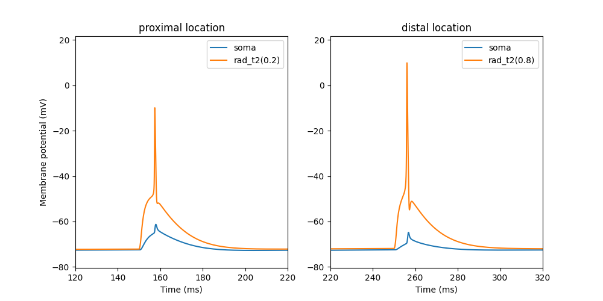

This is the readme file for the model associated with the paper:
Send bug reports, comments and questions on how to use this model to matus.tomko __at__ fmph.uniba.sk
The code for CA1 pyramidal cell morphology was adapted (by adding oblique branches) based on Cutsuridis et al: https://modeldb.yale.edu/123815
Active and passive mechanisms were adapted based on Migliore et al: https://modeldb.yale.edu/244688
The model was optimized and tested using HippoUnit (Saray et al., 2020): https://github.com/KaliLab/hippounit
There are two files of the model. "Original" is the original model used in the paper. In the "original" model, side branches are connected to the middle of sections forming the apical trunk. Therefore it is important to keep the odd number of sections segments, because should we want to change the number of segments, if the previous and new nseg values are both odd, the node at 0.5 will persist. In the "updated" model, each apical trunk section is divided into two sections of equal lenghts and side braches are connected to the ends of sections. The number and position of the side branches are preserved.
The script bAP.py produces a simulation of the backpropagation of
the action potential into the apical trunk.
Note an increase in bAP attenuation with increasing distance from soma.
The script oblique_integration.py produces a simulation of
the synaptic integration of 5 synchronous synapses
in the proximal and distal location of the oblique dendrite.

Note dendritic spikes (orange trace) triggered by synaptic activation.